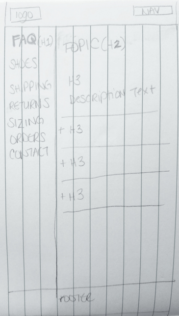

the challenge
The designer behind ReFated Shoes started growing a base of fans through his site on Etsy, but wanted to expand his reach by creating his own site. He asked me to help him develop a logo, new branding identity, and ecommerce site.
the solution
We ran tests to figure out 1) who was buying or would buy his shoes, and then 2) what design and 3) product details created trust between the customer and the company.

my role
I worked directly with the entrepreneur to conduct market/user research, design the brand identity, and design the final site. I also provided guidance on photography.
- User research
- User testing
- Strategy
- Branding
- Interaction design
- UI
- Sketch
- Balsamiq
- InVision
- HTML
- CSS
- PhotoShop
- Illustrator
the journey
started here

ended here

user research
We started by sending surveys to better understand the user:
- Do you purchase shoes online?
- Where do you go when you looking for a pair of shoes?
- What is your typical budget for one pair of shoes?
- Which features do you look for when purchasing shoes?
Words matter
We noticed the word “refurbished” was creating a negative reaction. So, we looked for a replacement. With the help of 133 responses, we found our new word:
“Hand-painted”
When asked, “Would you buy shoes that were hand-painted?”
54.3% of surveyors might buy “hand-painted” shoes, while 25.4% definitely would buy them.
The users of this products are fashion-forward risk takers. They are usually millennial and almost retired or retired men who are in the middle- to upper-middle class or higher income bracket. They appreciate and seek unique and one-of-a-kind items. Buyers of this product also include women buying shoes for the men in their lives.
Click the images to see their full user stories.
the landscape


Main competitors: Mr. Patina, J. Fitzpatrick Shoes, Septieme Largeur, Barker Shoes, Crocket & Jones, and Dandy Shoe Care
Price point: $300-$1,000
Design aesthetic: craftsmanship, old school
How they market: social media
To differentiate, we emphasized our lower price point, marketing, and the RFS message of great craftsmanship.
A quick lesson learned
The designer behind RFS often used the metaphor of the phoenix, “rebirthed from the fire of the bargain bin who finds himself on the top shelf once again.” Clever, right?
Wrong. Our research didn't agree with us. People didn’t want to hear that they were wearing old or used shoes. We tested a few other terms to use, and decided on “hand-painted shoes”, and we’d describe the process in another section, outside the tagline or title.
translating to web
Taking what we learned from the surveys and what is needed for a typical e-commerce site, we knew we had to incorporate these into the website:
- The shoes
- About section
- Product information
- e-commerce flow
- Reviews
- Returns, shipping & delivery
sketches & lo-fi
Homepage
1
2
3
4
1

2

FAQ
version 1
Here you'll see the navigation to the left, with drop-down menus. We decided to place the navigation at top for consistency and to leave the FAQ content open so it was easily searchable.
version 2
This was taken into the next version. Surveyors had asked that the FAQ section include the actual questions people may ask, rather than just the information, as it is presented here.
version 3
Here is the most final iteration. We made sure that the top navigation was similar to the main navigation for consistency. And made sure to include the questions.
Product details
During testing, users spent the most time on this page. The layout was liked, but they asked for more details, like the shoe size.
1

2

3

branding
Logo formation
I went through different variations of logos to see what the client was leaning towards.
like this

and this

The logo finalists:
craftsmanship
or classic and modern
Logo details
After a round of surveys, we decided on:
main logo
all variations
Style guide
Header 1
Header 2
Header 3
Header 4
Body
Colors
Buttons
Mockup

the prototype
Feedback
Condensed and edited transcript of the average tester:
For something so unique, the process should be highlighted a little bit better. Only the name alerted me that it was something else. And the pictures made it seem like it was worn.
We need to know upfront that something special is happening here.
Would love to see some before and after pictures. What does the paint job look like? There isn’t that much about that.
It just looks like a retail site, which is fine if that’s all that you want to be. It’s such a unique process and product, so you should play that up.
Nice layout, clean crisp lines, like the color scheme. Deep plum, not a color you see often, unique design.
Process looks same as any other process. There isn’t a way to take something out of the cart.
Why is there a quantity button if it’s unique?
Highlight unique process of shoes. Show that it’s not your average everyday retail site.
Look around and talk about what you think this is about.
What can you do here, what's it for, what strikes you about
it? Does the company background give you enough trust to
buy a product from them? Why or why not?
[Looking at logo]
ReFated shoes. Assuming it’s a shoe company. Recycled shoes?
Refated makes it seem consignment or recycled. Redesigned
shoes rather than recycled. I see the shopping cart icon.
It is selling shoes.
Trust. I don’t see anything that wouldn’t make me want to buy the product.
[Looking at about section]
I feel like i’m not understanding the refated shoes. What does wearable art mean?
I just don’t really understand what the company is about.
[Looking at FAQ]
Purchased and handpainted, oh. For something so unique, the process should be
highlighted a little bit better. Only the name alerted me
that it was something else. And the pictures made it seem like it was worn.
We need to know upfront that something special is happening here I would purchase if it were in my price range.
It’s unique and interesting, done by an artist and I appreciate that.
Would love to see some before and after pictures.
What does the paint job look like? There isn’t that much about that. It just looks like a retail site, which is fine if that’s all that you want to be.
It’s such a unique process and product, so you should play that up.
[Looking at home page]
Nice layout, clean crisp lines, like the color scheme. Deep plum, not a color you see often, unique design.
Go through the purchasing process. Review an item in detail, add to your cart and purchase. Since this is not a finished product, you will NOT be asked to fill in your credit card information. What do you think of the pages and checkout process?
Process looks same as any other process. Functionality works well. All the stuff you expect to see. Strange that there’s no sizing in the cart. There isn’t a way to take something out of the cart. Why is there a quantity button if it’s unique?
What, if anything, do you like or dislike? Since this isn’t a finished design, what would you like to see in the final version?
Highlight unique process of shoes. Show that it’s not your average everyday retail site.
Main feedback
Photos
We had to upgrade our quality of photos. As is, they were taking away from the design and purpose of the site.
Background section
We had to include a section that described the process. The before and after shoes, that were mentioned during the lo- and hi-fi tests, would be a great solution for the next round of shoes.
Shopping cart
I designed the shopping cart to look like any other shopping cart. It included a small image of the product, the price, the description, and the quantity that is being purchased. A tester had stared at this page for a little longer than usual. Then I heard “Why is there a quantity button if it’s unique?” I laughed. Of course you can’t! I also forgot to add a nice big “X” button at the top right corner.
launch


{kind=link}
{kind=link}
key takeaways
A/B testing is a great way to snap out of auto pilot. While I was designing the shopping sections of the site, I designed the pages for a typical e-commerce site: the browsing page, the product details, adding to cart, and checkout. However, a tester quickly pointed out that if these items were truly unique, as we stated throughout the page, then why was there a quantity button? Just because I was working on an ecommerce site, doesn't mean it followed every single e-commerce page. It reminded me that no task should be on autopilot and developed a greater appreciation for user testing.